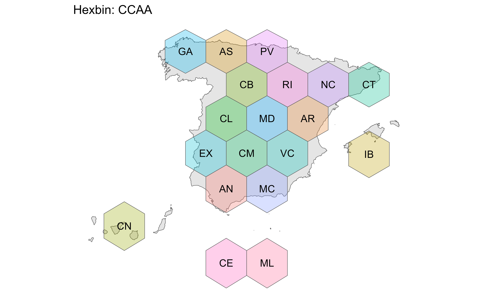
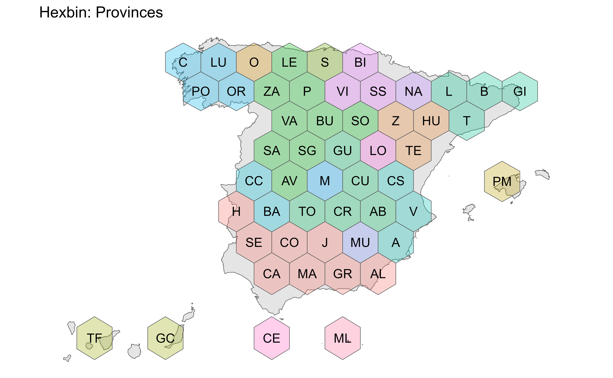
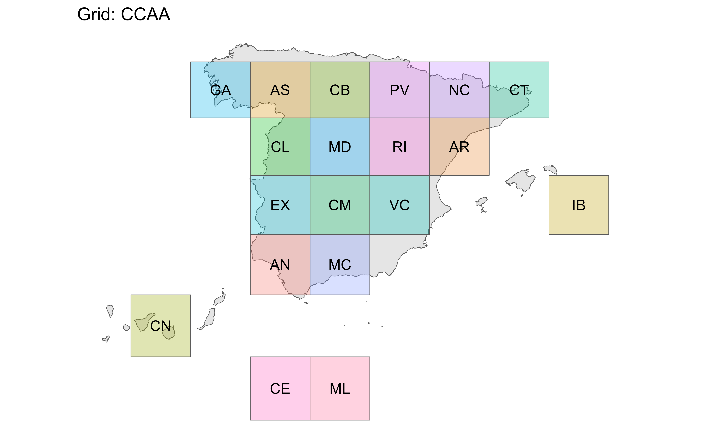
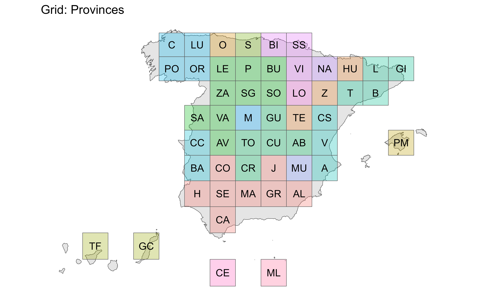

Loads a hexbin map (sf object) or a map of squares with the
boundaries of the provinces or autonomous communities of Spain.
Usage
esp_get_hex_prov(prov = NULL)
esp_get_hex_ccaa(ccaa = NULL)
esp_get_grid_prov(prov = NULL)
esp_get_grid_ccaa(ccaa = NULL)Arguments
- prov
A vector of names and/or codes for provinces or
NULLto get all the provinces. See Details.- ccaa
A vector of names and/or codes for autonomous communities or
NULLto get all the autonomous communities. See Details.
Details
Hexbin or grid map has an advantage over usual choropleth maps. In choropleths, a large polygon data looks more emphasized just because of its size, what introduces a bias. Here with hexbin, each region is represented equally dismissing the bias.
You can use and mix names, ISO codes, "codauto"/ "cpro" codes (see
esp_codelist) and NUTS codes of different levels.
When using a code corresponding of a higher level (e.g.
esp_get_prov("Andalucia")) all the corresponding units of that level are
provided (in this case , all the provinces of Andalusia).
Results are provided in EPSG:4258, use sf::st_transform()
to change the projection.
See also
Other political:
esp_codelist,
esp_get_can_box(),
esp_get_capimun(),
esp_get_ccaa(),
esp_get_comarca(),
esp_get_country(),
esp_get_munic(),
esp_get_nuts(),
esp_get_prov(),
esp_get_simpl_prov()
Examples
esp <- esp_get_country()
hexccaa <- esp_get_hex_ccaa()
library(ggplot2)
ggplot(hexccaa) +
geom_sf(data = esp) +
geom_sf(aes(fill = codauto),
alpha = 0.3,
show.legend = FALSE
) +
geom_sf_text(aes(label = label), check_overlap = TRUE) +
theme_void() +
labs(title = "Hexbin: CCAA")
#> Warning: st_point_on_surface may not give correct results for longitude/latitude data

hexprov <- esp_get_hex_prov()
ggplot(hexprov) +
geom_sf(data = esp) +
geom_sf(aes(fill = codauto),
alpha = 0.3,
show.legend = FALSE
) +
geom_sf_text(aes(label = label), check_overlap = TRUE) +
theme_void() +
labs(title = "Hexbin: Provinces")
#> Warning: st_point_on_surface may not give correct results for longitude/latitude data

gridccaa <- esp_get_grid_ccaa()
ggplot(gridccaa) +
geom_sf(data = esp) +
geom_sf(aes(fill = codauto),
alpha = 0.3,
show.legend = FALSE
) +
geom_sf_text(aes(label = label), check_overlap = TRUE) +
theme_void() +
labs(title = "Grid: CCAA")
#> Warning: st_point_on_surface may not give correct results for longitude/latitude data

gridprov <- esp_get_grid_prov()
ggplot(gridprov) +
geom_sf(data = esp) +
geom_sf(aes(fill = codauto),
alpha = 0.3,
show.legend = FALSE
) +
geom_sf_text(aes(label = label), check_overlap = TRUE) +
theme_void() +
labs(title = "Grid: Provinces")
#> Warning: st_point_on_surface may not give correct results for longitude/latitude data
